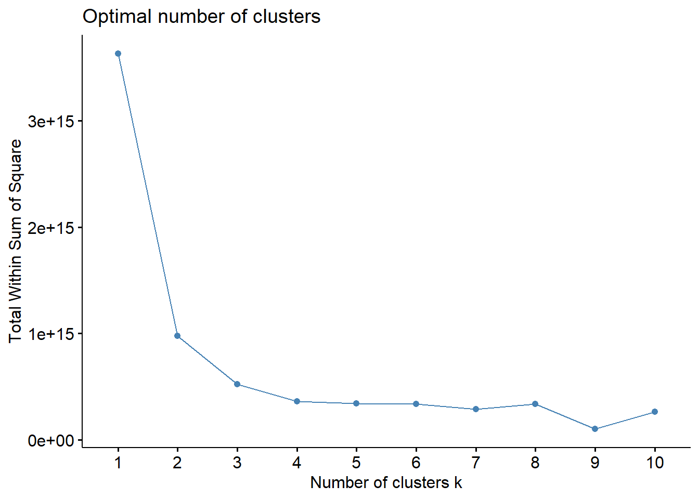
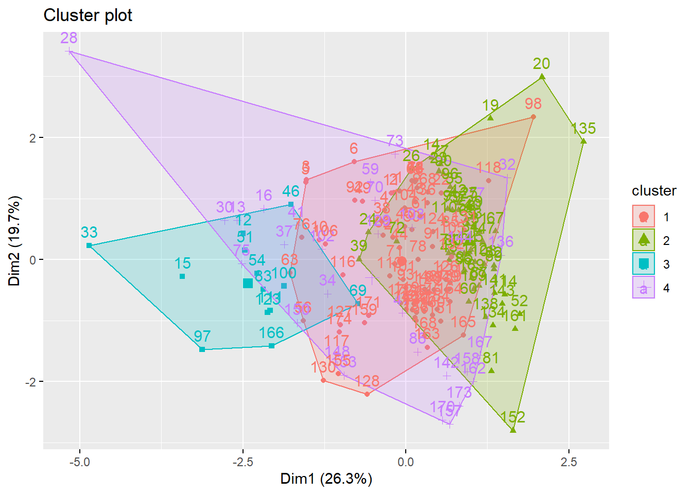

Capítulo 5 Análisis de datos. Clustering
En esta sección vamos a aplicar los distintos procedimientos de análisis de datos vistos a lo largo de la asignatura. Para ello, usaremos el archivo que exportamos en capítulos anteriores: android-simplified.csv.
En este segundo capítulo trateremos sobre las clustering.
5.1 Clustering
Para aplicar clustering necesitamos de valores numéricos, al contrario de lo que hemos tenido que tratar al buscar reglas de asociación. Vamos a intentar establecer grupos entre los virus subidos dependiendo de ciertos criterios.
Para agrupar en clusters, usaremos los paquetes cluster y factoextra:
library(cluster)
library(factoextra)5.1.1 Elección de atributos
Para poder aplicar clustering, debemos primeramente escoger los atributos que queremos que formen parte del conjunto a comparar. El algoritmo kmeans se encargará de establecer los grupos
android <- read_csv("android-simplified.csv")
# Vamos a eliminar las fechas, el país y el resultado de los escaneos
android <- android %>%
select(-c(scan_date, first_seen, last_seen, submission.submitter_country, additional_info.exiftool.FileType,contains(".result")))5.1.2 Otros tratamientos
Vamos a modificar los valores NA, que se encuentran en la columna TargetSDKVersion (Version de Android), por la media truncada del resto de valores de la columna
android <- android %>%
mutate(additional_info.androguard.TargetSdkVersion=
ifelse(is.na(additional_info.androguard.TargetSdkVersion),trunc(mean(additional_info.androguard.TargetSdkVersion, na.rm=TRUE)),
additional_info.androguard.TargetSdkVersion))El resultado final que hemos obtenido en el dataset que usaremos para aplicar el algoritmo kmeans es el siguiente:
paged_table(android)dim(android) # Hemos obtenido una tabla de 183 virus y 8 atributos, todos valores numéricos## [1] 183 85.1.3 Agrupación en clusters. Iteración 1
Vamos a usar el algoritmo kmeans para encontrar, en una primera iteración, los grupos mejor representados. Para ello, vamos a calcular previamente cuál sería el número óptimo de clusters:
android %>%
fviz_nbclust(FUNcluster = kmeans, method = "wss",
diss = dist(android, method = "manhattan"))
La recta se aplana cuando el numero de clusters es 5, por lo que el error cometido de usar más clusters es irrelevante.
Vamos a ejecutar ahora el algoritmo kmeans para 5 clusters:
grpAnd <- kmeans(android, centers = 5)
grpAnd## K-means clustering with 5 clusters of sizes 79, 14, 3, 86, 1
##
## Cluster means:
## ...1 total size times_submitted harmless_votes malicious_votes
## 1 96.83544 60.88608 4044664.1 5.189873 0.0000000 0.02531646
## 2 83.21429 62.21429 16716171.1 1.428571 0.0000000 0.00000000
## 3 72.33333 61.66667 74811670.0 3.666667 0.0000000 0.00000000
## 4 89.75581 59.96512 842579.7 48.232558 0.2093023 0.15116279
## 5 85.00000 61.00000 178355426.0 1.000000 0.0000000 0.00000000
## positives additional_info.androguard.TargetSdkVersion
## 1 21.75949 24.00000
## 2 17.85714 22.57143
## 3 16.00000 27.66667
## 4 22.23256 22.98837
## 5 15.00000 29.00000
##
## Clustering vector:
## [1] 4 1 1 4 4 1 1 1 1 4 1 1 2 1 4 2 1 1 4 4 4 1 4 4 4 4 4 4 1 4 1 4 1 2 1 4 1
## [38] 1 4 1 4 4 1 4 4 1 4 1 2 3 1 4 1 4 2 4 4 2 4 1 4 4 1 3 4 1 4 1 4 1 4 4 4 1
## [75] 2 1 1 4 1 4 1 4 4 1 5 4 4 4 4 2 4 4 4 4 1 4 4 1 4 1 4 4 3 4 2 1 1 2 4 1 1
## [112] 1 1 4 4 4 4 4 2 4 1 4 4 4 1 1 1 1 1 1 2 4 4 1 1 1 2 1 1 4 1 4 4 1 4 4 1 1
## [149] 4 1 4 1 1 4 4 1 1 1 1 4 1 4 4 1 4 1 1 4 1 4 1 1 1 1 2 1 4 4 1 4 4 1 4
##
## Within cluster sum of squares by cluster:
## [1] 2.263894e+14 2.889812e+14 1.673119e+15 6.316953e+13 0.000000e+00
## (between_SS / total_SS = 95.5 %)
##
## Available components:
##
## [1] "cluster" "centers" "totss" "withinss" "tot.withinss"
## [6] "betweenss" "size" "iter" "ifault"Hemos obtenido un total de 5 clusters de tamaño 79, 14, 3, 86, 1.
Vamos a visualizar los virus según el cluster:
fviz_cluster(grpAnd, data=android)
En la grafica podemos encontrar valores muy dispersos como la fila 4, 45, 40, 70, 162, 85, 103, 50 y 64.
Vamos a prescindir de ellos para encontrar grupos más cercanos entre ellos. Al eliminar estas filas, las columnas malicious_votes y harmless_votes son costantes, por lo que las vamos a eliminar.
5.1.4 Agrupación en clusters. Iteración 2
Eliminamos las columnas con datos dispares:
android <- android %>%
filter(!...1 %in% c(4, 45, 40, 70, 162, 85, 103, 50, 64)) %>%
select(-c(harmless_votes,malicious_votes))Vamos a repetir el proceso de buscar el mejor numero de clusters:
android %>%
fviz_nbclust(FUNcluster = kmeans, method = "wss",
diss = dist(android, method = "manhattan"))
En este caso, el número de clusters óptimo se ha reducido a 3. Procedamos a realizar la agrupación:
grpAnd <- kmeans(android, centers = 4)
grpAnd## K-means clustering with 4 clusters of sizes 77, 54, 13, 30
##
## Cluster means:
## ...1 total size times_submitted positives
## 1 100.07792 60.87013 2543105.7 1.597403 19.98701
## 2 82.51852 59.25926 230482.3 4.925926 23.81481
## 3 79.07692 62.53846 17163663.7 1.384615 17.92308
## 4 100.76667 60.80000 6043629.6 11.500000 22.83333
## additional_info.androguard.TargetSdkVersion
## 1 23.62338
## 2 22.87037
## 3 22.53846
## 4 24.46667
##
## Clustering vector:
## [1] 1 1 1 1 1 1 1 1 2 1 1 3 4 2 3 4 4 1 2 2 1 1 2 2 2 2 2 4 2 4 2 4 3 4 2 1 4
## [38] 1 2 2 4 2 1 1 1 3 4 2 1 1 3 2 2 3 2 1 2 2 4 2 1 1 1 1 2 1 2 1 3 4 1 2 4 2
## [75] 4 1 2 1 2 2 2 2 3 2 1 2 2 4 2 2 1 1 1 2 2 2 3 1 1 3 1 4 4 1 1 1 1 2 2 2 3
## [112] 2 1 2 2 1 1 1 1 1 1 1 3 1 1 1 1 1 4 1 1 1 1 2 2 4 1 2 1 1 2 4 2 4 1 1 2 4
## [149] 1 4 1 2 4 1 1 1 4 4 1 1 2 4 1 1 1 3 4 1 2 4 1 1 4 1
##
## Within cluster sum of squares by cluster:
## [1] 2.500585e+13 4.497025e+12 2.525358e+14 7.822480e+13
## (between_SS / total_SS = 90.1 %)
##
## Available components:
##
## [1] "cluster" "centers" "totss" "withinss" "tot.withinss"
## [6] "betweenss" "size" "iter" "ifault"Hemos obtenido un total de 3 clusters de tamaño 77, 54, 30 y 13.
Vamos a visualizar los virus según el cluster:
fviz_cluster(grpAnd, data=android)
Hemos obtenido por tanto 4 grupos bien diferenciados, que se pueden usar para buscar patrones entre ellos como versiones de Android afectadas, positivos totales…